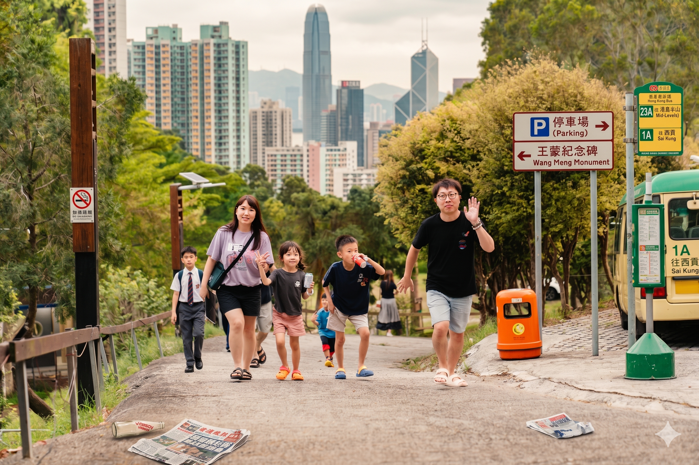

童話世界 ✕ 維港風情 ✕ 在地美食 專屬行程指南

帶著期待的心情抵達香港，辦理入住後，前往香火鼎盛的黃大仙祈福，再到充滿傳奇色彩的九龍城寨公園感受歷史與江南園林的交錯。
🚇 交通攻略：機場 ➔ 帝景酒店 ➔ 黃大仙 ➔ 九龍城寨
機場至酒店： 強烈建議在機場直接搭乘 龍運巴士 A38 線，在「帝景酒店」站下車即可直達門口！(若錯過班次，可搭機場快綫至青衣站再轉乘計程車)
市區景點轉乘： 從酒店搭乘接駁車至 荃灣西站。搭乘港鐵「屯馬綫」至鑽石山站轉「觀塘綫」達 黃大仙站。參拜後，搭港鐵至 宋皇臺站（B3 出口）步行前往九龍城寨。
全日暢遊香港迪士尼樂園，享受充滿歡樂的家庭時光！
🚇 交通攻略：帝景酒店 ➔ 迪士尼
去程： 搭乘「酒店免費接駁車」或 234B 巴士至 荃灣站 / 荃灣西站，轉乘港鐵（荃灣綫 ➔ 荔景站轉東涌綫 ➔ 欣澳站轉迪士尼綫）即可抵達。📍 導航至迪士尼站
回程與建議： 煙火結束後通常較晚，若一家人玩得較為疲累，強烈建議直接從迪士尼搭乘計程車回帝景酒店（車程約20分鐘），花點小錢換取舒適。
橫跨九龍與港島，體驗最經典的香港在地文化與百萬夜景。
🚇 交通攻略：九龍港島走透透
市區出發： 先搭乘「酒店接駁車」至荃灣站。從荃灣站搭乘荃灣綫一車直達 尖沙咀站，步行前往科學館。
過海與太平山： 尖沙咀碼頭搭 天星小輪 至中環。中環市區以步行銜接，至花園道搭 山頂纜車。
夜間回程： 逛完油麻地廟街後，搭乘港鐵荃灣綫直達 荃灣站，再轉乘計程車或留意接駁車班次返回帝景酒店。
把握最後時光，體驗高空纜車的壯麗，並完成伴手禮採購。
🚇 交通攻略：帝景酒店 ➔ 東涌 (昂坪/東薈城) ➔ 機場
前往東涌： 搭乘酒店接駁車至荃灣市區，搭乘港鐵 (荃灣站 ➔ 荔景站轉東涌綫 ➔ 直達 東涌站)。昂坪纜車站與東薈城皆在東涌站旁步行範圍內。
最佳建議 (東涌至機場)： 行程結束後 不建議搭港鐵。請直接在東涌站旁的巴士總站搭乘 S1 循環線公車，約 15 分鐘即可直達機場，方便又便宜！📍 導航至S1巴士站